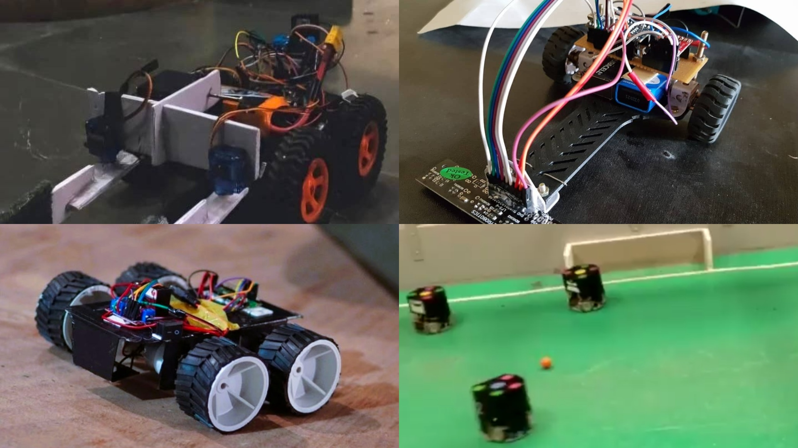

Hello! I'm a Master's student in Mechanical Engineering at the University of Washington, specializing in Controls, Mechatronics, and Robotics, with a current GPA of 3.86/4, and relevant coursework in Linear Systems Theory, Dynamics and Vibrations, NonLinear Control, Multivariable Control and Robust Control.
Prior to this, I earned my Bachelor of Technology in Mechanical Engineering from Delhi Technological University, graduating with a GPA of 3.70/4.
Currently, I am working with Boeing Advanced Research Collaboration to build an automated inspection cell cleaning bot as part of my project based MS option.
My primary interests lie in the intersection of Robotics and Automation, Control Systems, and Mechatronics. I am particularly passionate about designing intelligent systems that bridge the gap between theoretical control frameworks and real-world robotic applications.
Additionally, I have a strong interest in leveraging modern optimization techniques to enhance the design and manufacturing process. This includes applying tools like CAD and FEA to create innovative, cost-effective solutions. I am particularly passionate about advancing human-robot interaction through intelligent control frameworks that enable robots to better understand and interact with their environments.
Work Experience
Boeing Advanced Research Collaboration at University of Washington:
Mechatronics Masters Project Engineer
Designing and prototyping an automated robotic system for ultrasonic inspection cell maintenance.
Expected to increase operational uptime by 100+ hours annually and reduce maintenance costs.
Altair (Robotics Technical Team of Delhi Technological University):
Team Advisor
Led and developed multiple robotics projects, including Micromouse, Line Following Robot, and Robosoccer.
Integrated sensors, actuators, motor drivers, and control systems, achieving top rankings in robotics competitions.
Worked on CanSat and Intelligent Ground Vehicle competition (IGVC), specializing in mechanical and electrical design.
Led teams of 7+ students in competitive robotics, optimizing designs through iterative improvements and structural analysis.
Delhi Metro Rail Corporation:
Mechanical Engineering Trainee
Acquired hands-on experience in Bogie, HVAC, Door Systems, and Pneumatics.
Analyzed technical schematics and performed troubleshooting, assembly, and maintenance of rolling stock systems.
Suzuki Motor Corp. Service Center:
Mechanical Engineering Trainee
Diagnosed and repaired over 150 vehicles, optimizing service workflows to reduce service time by 5%.
Gained hands-on experience with every automobile component, maintenance procedures and vehicle systems and diagnostics.
Developed a robotic arm simulation system using ROS framework, integrating:
• SOLIDWORKS-to-URDF conversion for 3D model compatibility
• MoveIt! for advanced motion planning and control
• RViz visualization and Gazebo physics simulation
• Custom Python scripts for automated arm movements
Simulated an autonomous vehicle motion planning system in CARLA simulator utilizing:
• Behavioral planning logic for dynamic obstacle avoidance and stop sign handling
• Path generation algorithms with spiral trajectory optimization
• Static collision checking and path selection systems
• Custom velocity profile generation for various driving scenarios
Vehicle Detection and Counting using YOLOv8 and OpenCV (May, 2024)
Built a computer vision-based vehicle detection and counting system featuring:
• YOLOv8 and OpenCV for real-time vehicle detection and tracking
• SORT algorithm implementation for accurate vehicle path tracing
• Custom region masking for specific detection zones
• Real-time visualization system with count display and tracking boxes
Matlab Program to visualize COVID19 data (November, 2023)
Created a MATLAB-based COVID-19 data visualization platform with:
• Object-oriented programming for data processing and analysis
• Interactive GUI with dynamic plotting capabilities and data filtering
• Custom search functionality and data range selection tools
• Real-time statistical analysis with adjustable moving averages
Designed and analyzed a Formula SAE racing chassis, integrating:
• SOLIDWORKS for complete 3D chassis modeling
• ANSYS Structural simulation for impact and performance testing
• Multiple load case analyses including front impact, side collision, cornering loads, and torque tests

Undergraduate Technical Team Bots (~June, 2022)
Led robotics projects at DTU Altair technical team, integrating:
• Micromouse robot with Arduino control system, IR sensors, and H-Bridge motor drivers
• Line follower robot featuring PID control and 3D-printed optimized chassis design
• Remote-operated Robosoccer bot with custom sheet metal and 3D-printed components
• Prototype designs for CanSat, Intelligent Ground Vehicle Competition and various other competitions.
The template for this website was cloned from here.